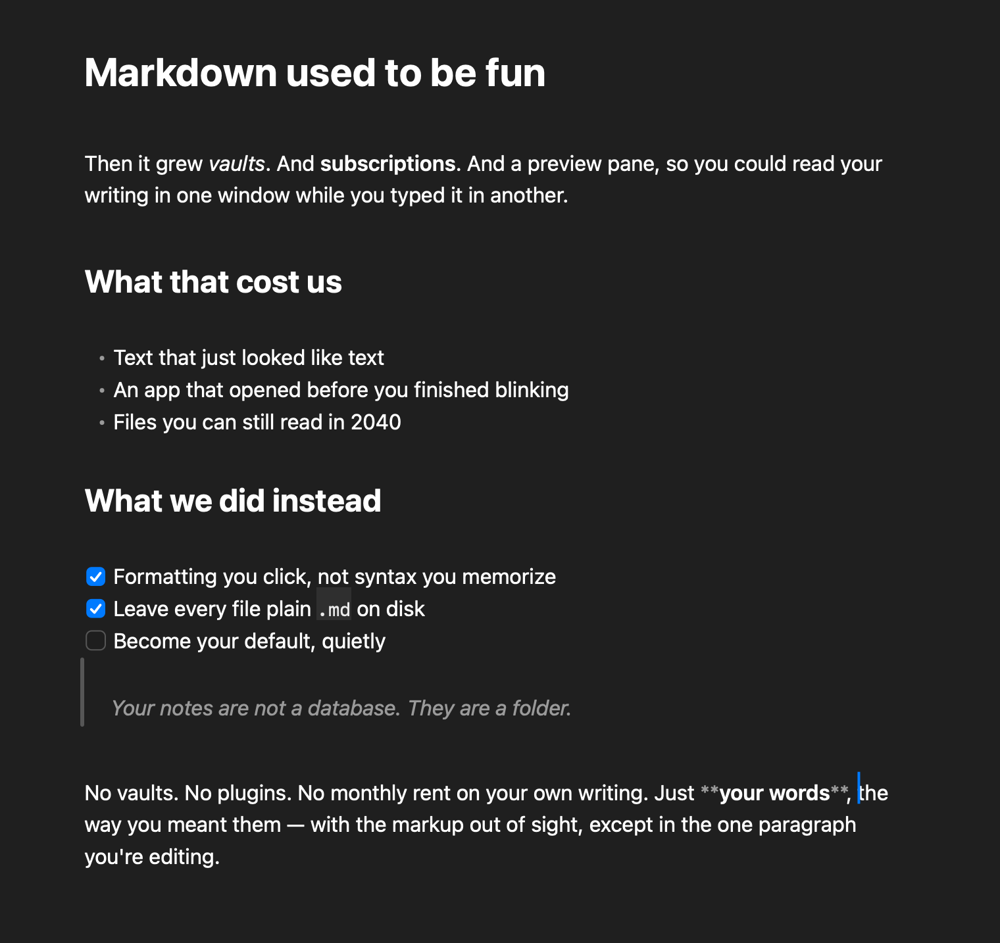

A simple, fast markdown editor for macOS. No vaults, no plugins, no subscription.

Markdown gets treated like plumbing. It deserves better. Markdown is a small miracle.
It's just text. It outlives every app that ever touches it. It's the one format your notes, your README, your agent, and your future self all speak fluently — write it once, open it anywhere, forever. Nothing else in software is that simple and that durable at the same time.
But somewhere along the way, the apps forgot that.
They bolted on vaults and plugin marketplaces. They wrapped a plain text file in a 300-megabyte browser that idles like a space heater. They locked your notes in a database and started charging you monthly rent to read your own writing. And the ones that stayed "simple" just shrugged and left the raw ## and ** sitting on the screen — like it's 2011 — and called it clean.
So now markdown feels like a chore. AI writes it, AI understands it. But you don't — you're left with a "vault," whatever that means, and a graph view you've looked at exactly twice.
And yet — the magic is still there. It's just buried under a decade of feature creep and neglect.
Markdown deserves a dust-off. An app that remembers it's just text: opens it before you blink, hides the syntax, and shows you the words. Fast. Native. Yours. Nothing in the way.
So we built it. No vaults. No plugins. No subscription. Your markdown, finally readable and editable — the way it should have been all along.
Vireo is what I think markdown should feel like. Set it as your default, and I hope you forget it's even running.
— Mate Rauscher
##, no **, no preview pane. Bold looks bold; headings look like headings..md. Plain GitHub-Flavored Markdown on disk, byte-for-byte. No database, no lock-in, no export button to remember..md in Finder opens clean — and Quick Look renders in Vireo's style without even launching the app.Open a .md file in Vireo and you'll see what your writing was supposed to look like the whole time. No syntax, no spinner, no monthly fee, no catch.